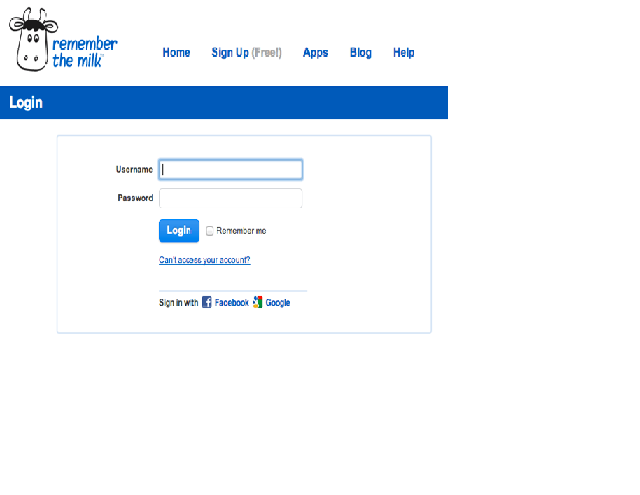

This module covers authentication, which is focused on verifying someone's identity. We will look at the Kerberos authentication protocol, including single sign-on, which is used all over the web. We will also look at recommended password practices and the rise of two-factor authentication techniques.
This module focuses on authentication and access instead of encryption. It is important to make sure that only authorized users are allowed access inside a network or access to certain machines.
The textbook reading assignment (given below) walks through a few iterations of an authentication protocol, pointing out security issues.
Reading Assignment: Section 8.4 "End-Point Authentication" in the textbook
At the end of this module, students will be able to:
Kerberos is an authentication protocol used for authentication all over the web. You use Kerberos (or something very similar) every day. Creating strong passwords and dealing with password management is an issue that we face daily.
In the previous topic, we saw that authentication could be achieved by using symmetric encryption. One of the problems with symmetric encryption is that the two communicating parties need to agree upon the shared key. If you have no way of physically communicating with the other party, how do you agree upon and distribute a shared key?
Another issue is what happens if an attacker happens to get access to the shared key. For this reason, many protocols that use shared keys also change the keys frequently. This limits the damage an attacker can do if the key is compromised.
(Reference used in the discussion below is Stallings, Network Security Essentials, Section 4.1):
Here are four potential ways in which key distribution could be accomplished
There are problems with the first three options, so let's look more at option 4. In this option, there are two kinds of keys used:
In order to make this work, there also needs to be the trusted third party, which is called a key distribution center (KDC). The KDC provides a one-time session key to two communicating parties so that they can begin their authentication process.
The general steps are as follows:
Kerberos is a key distribution and authentication method used by every operating system. It uses a shared (thus, symmetric) secret key. We'll see later that Kerberos can also be used for single sign-on operations (such as using your Facebook credentials to login to other services).
Watch this video below for an overview of Kerberos.
Professor Messer, “Kerberos”, Sep 2014
Kerberos is often used for single sign-on (SSO). The goal of SSO is to allow a user to authenticate once and use multiple services without having to re-authenticate. Google and Facebook provide single sign-on. There are several websites that allow you to authenticate with either your Google or Facebook credentials and use their service. One example is a to-do list application called Remember the Milk (RTM).
You can register directly with RTM, or you can link your RTM account with your Facebook or Google credentials. If you do so and you are already logged in with Facebook or Google, you don’t have to re-enter your username or password to login to RTM.
Optional: If you are interested in more details about possible security issues with SSO, see the research paper “Signing Me onto Your Accounts through Facebook and Google: a Traffic-Guided Security Study of Commercially Deployed Single-Sign-On Web Services” from May 2012
(source: http://xkcd.com/936/)
As we've seen earlier, one of the keys of authentication is a user password. So, how can we create strong passwords that we might be able to remember? The article in the reading assignment lists four methods to create such passwords:
The Electrum method was the subject of the popular xkcd comic shown at the top of the page. This has spawned a couple of sites to help you generate such passwords:
xkcd also had a comic about password reuse - https://xkcd.com/792/
Another tip for managing passwords is to use a password management tool, such as 1Password (my favorite) or LastPass.
Watch this TED talk for more information on password use (or mis-use):
[Optional]: "Passwords and the Evolution of Imperfect Authentication", Communications of the ACM, July 2015, http://cacm.acm.org/magazines/2015/7/188731-passwords-and-the-evolution-of-imperfect-authentication/fulltext
Reading Assignment: "How to Create a Secure Password You Can Remember Later: 4 Key Methods", https://open.buffer.com/creating-a-secure-password/, July 2014
Two-factor authentication is pretty much what it sounds like. You provide one type of authentication (your password) and if you're connecting to the service from an IP address that is not recognized (a new computer or device), the service will try to contact you using other method. Typically this is done by sending a text message to a mobile device with a code for you to enter on the site. Even though it's not 100% secure -- someone could steal both your password and your phone, it is much more secure than if someone could access your data with only your password.
Here's a list of sites and services that provide two-factor authentication - https://twofactorauth.org/
[Optional]: Here's an article about Apple's two-factor authentication - "iCloud users take note: Apple two-step protection won’t protect your data", Ars Technica, May 2013, http://arstechnica.com/security/2013/05/icloud-users-take-note-apple-two-step-protection-wont-protect-your-data/
Reading Assignment: Google's webpage on 2-Step Verification, https://www.google.com/landing/2step/